Let's Re-invent the Transformer!
Sanyam Asthana, 8th July 2026
Why re-invent?
Transformers are one of the most daunting concepts for a beginner to grasp. When most of them encounter it, they straight away look at a figure having two big boxes with smaller boxes inside of them and arrows pointing to various locations. They then proceed to read what each of the boxes do, but are seldom able to understand why things are as they are.
I think that re-inventing, i.e., assuming you know nothing about something, and working your way to accomplish the task absolutely eradicates this problem, and the same may be worth doing for a topic such as Transformers (am I sounding too 3b1b?).
What are transformers?
We don't know. Let's make something together and we'll name it the "Transformer".
Prerequisites
Basic knowledge of neural networks, linear algebra and backpropagation (just an idea of it) is needed. This article will not be math-heavy, and will instead be intuition-based. However, certain expressions may require the aforementioned prerequisites to get an intuition of.
But what's the task we're trying to accomplish?
The task we're trying to accomplish is an age-old task called Language Modeling, which just encompasses making computers understand and speak natural language. In other words, representing the structure, semantics and dependencies of natural language in a form the computer can understand, i.e., numbers and vice-versa. There have been earlier attempts at doing so, one of the most popular being the RNN (Recurrent Neural Network).
RNNs process language as a sequential stream. They process words (or tokens) one by one. However, RNNs suffer from three major problems:
- Long-range dependencies: RNNs cannot capture long-range dependencies between words. If, in a long story, the protagonist's name is revealed earlier, and later the person is referred to as "he", the RNN would completely fail to associate the name with "he".
- Vanishing gradients: Because of the recurrent nature of RNNs, gradients can be buried deep inside a lot of layers. This makes the gradients of the earlier text vanish, and stalls the training process of the model.
- Non-parallelizable: This flaw is rather practical than theoretical, but because RNNs are sequential by nature, they have to process the previous word (or token) before moving on to the next one. This makes them non-parallelizable. We can't leverage the sheer throughput of GPUs for RNNs because they can't process tokens in parallel.
So the solution we present not only has to model language, but also solve each of the problems mentioned above.
Let's begin!
Representing units as numbers
So first we tackle the obvious part. How do we feed in words to a computer?
In the case of language modeling, we talk more about tokens and less about words. Tokens are the smallest unit of language a computer can understand, whether that be a character, sub-word, word or a sentence. Usually, we choose sub-words (fragments of words) as our tokens. There has been a lot of research and development around embeddings and the choice of tokens, but I would like to keep that out of the scope of this article.
Now, we want to feed sub-word tokens into whatever we build, and for that, we need to translate them into numbers. But wait, wasn't the whole point of language modeling representing language as numbers? Well yes, it is, but representing sub-words as numbers is not the same as representing language. Language is much more than sub-words. Language has vocabulary, semantics, dependencies, meaning and sequence, and we are addressing only vocabulary at the moment.
This task is not hard. We have a list of sub-words with us, and we assign each sub-word an ID. For example, "house" may have an ID of 520, and "ing" (the continuous tense suffix) may have an ID of 7803 (I just wrote arbitrary numbers here).
We take our language sequence to be modeled, divide it into sub-words, and prepare a vector of IDs of each of the tokens. However, assigning each token a unique ID does not communicate anything about semantic similarity of words. We'll use embeddings to solve this problem.
Embeddings
We assign each token ID a distinct vector in a high-dimensional vector space. Representing sub-words as vectors allows us to calculate similarity between words. The closer the vectors of two sub-words are, the closer they are semantically (mathematically, greater dot product translates to greater semantic similarity). This is because, words (or sub-words) with similar meanings tend to occur at similar places (distributional hypothesis). Again, there has been a lot of R&D in this kind of vector representation of tokens, but I keep it out of the scope here. We call the vectors representing our sub-words as token embeddings.
These vectors are not usually what we have beforehand (though one can do that if they want). We usually train these embeddings along with our model.
The embeddings are actually a huge matrix of size |V| x ndim, where |V| is the number of tokens in the vocabulary we have, and ndim is the number of dimensions of each vector representing a sub-word (we can choose this metric on our own, and see what works out best). When we want to fetch embeddings for each of our tokens in the input sequence, we essentially perform a lookup. We find embeddings of a token with ID x by fetching the ndim dimensional row of the embedding matrix at the index x.
So, till now, our "architecture" looks something like this:
We'll keep on augmenting to this architecture flowchart as we invent new components.
How the model learns to execute intricate tasks
How does the model learn to do such intricate tasks such as representing words as vectors, along with their semantic similarity? Well, that is not what we are concerned about when designing architectures like this. We are essentially making a road network for cars. We don't know how the cars will be driven, and we don't know the drivers who drive them, but we do know that if we make a good enough road network, the cars will naturally be driven effectively. Here, the cars are the data being transmitted in the architecture, and the road network is the architecture we build. We have to give the data enough space and opportunity to learn and execute tasks, and the model will learn how to do those tasks over time during training.
Basically, we make our final output dependent on certain parameters and operations in a way that the backpropagation algorithm can effectively turn the knobs (the weights and biases) to produce the desired outputs.
Attention
This part is going to be very text-heavy, but attention is at the core of what we're trying to build, so reading this would be worth it.
Problem
Currently, we have expressed our tokens as vectors in a multi-dimensional space and we can also detect the similarity between two tokens based on how well their embedding vectors align. However, we still miss a crucial detail of language, inter-dependence.
Dependencies can be found all the time in language. An adjective depends on a noun, a pronoun depends on a noun, and so on. Without accounting for these dependencies, we can never model language properly. It is this dependency problem that RNNs were meant to solve but they couldn't solve it efficiently for long-range dependencies. This is one of the major problems we have to solve.
Thinking of solutions
Let's think of ways of processing dependencies. One obvious solution is to input a dependency graph of each text along with the text sequence. However, that would need massive amounts of labeled data, and we would naturally prefer unlabeled data for ease-of-training. We can input tokens sequentially and train with each token, but that would just re-introduce the problems that RNNs had.
What if we let the tokens "talk" to each other, and let themselves find out how dependent they are on each other? So, for each token, we let it talk to every other token, and ask them how well the current token "attends" to each of the other tokens. Sounds good, right? So, what do we do? Do we just multiply each of the token embeddings with other token embeddings? That would have worked if words in language had constant meanings everywhere, but that's rarely the case. Words like "bank" can mean "financial institution" and "river side" in different contexts. Moreover, pronouns like "he" inherently have variable meanings, depending on whom they represent.
Let's slow down and actually think about what information we're looking for. Suppose we have "he" as a token in a text, and a token "John". Now, let's see what information does "he" need to determine whether "John" is relevant to it. Since "he" is a pronoun, it naturally asks for a "singular male noun mentioned in the text" to attend to. Now "John" should broadcast the information "oh yeah, I'm one of them". When these two pieces of information interact, we get the scores of how much each token relates to every other.
So, we let each token ask queries to each of the other tokens about what all information it needs to decide dependencies, and receive keys from each of the other tokens about the relevant information. Now how do we accomplish that? We assign each token a query vector, and each token a key vector. We let these two vectors interact to get the score. Remember our "parallelizable" goal? Instead of processing each of these vectors sequentially, we put them into a matrix which the GPU can compute more efficiently.
The matrices
We prepare two matrices, one which contains the query vectors of each token, and one which contains the key vectors of each token. How do we prepare these matrices from the token embeddings? We just do a linear transformation, i.e., multiply the token embeddings with two static (token sequence agnostic) matrices Wq and Wk to get our Q (query) and K (key) matrices respectively. We then let these two matrices interact with each other, i.e., we multiply Q with K (precisely, KT, to preserve the condition for matrix multiplication) to get the "attention" scores.
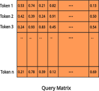
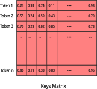
How does this work?
Over time during training, the Wq and Wk matrices will adjust their values to produce accurate Q and K matrices, which reflect the reality of token dependencies. Towards the end of training, multiplying the query vector of a token with the key vector of a token it attends to will naturally produce a greater dot product, since training (gradient descent and backpropagation) will procedurally nudge the values in the matrices to cause these two vectors of attending tokens to align with each other more (remember how semantic similarity worked in embeddings?). How exactly these final numbers reflect real world dependencies is not what we care about. We are constructing a road network for cars to effectively travel, and cars will learn to travel on their own. Remember, in deep learning, we are not coding intelligence, but coding up opportunities for intelligence to emerge.
In other words, we never "tell" the Q matrix to ask questions or the K to provide answer keys. They learn to execute these tasks themselves. We just provide them space to do so. By providing them "space", we mean including them in the expression of the final loss, so backpropagation can fix the weights of the two matrices.
Using the calculated scores
After we have multiplied the two matrices, we have an output matrix of values corresponding to the raw attention values of each of the tokens with other tokens. However, these raw attention values can be very large, or very small at times. Some values may be around 500, while some may approach zero. Instead of these unbounded values, we would like bounded weights, which tell the "weightage" of attention between two tokens. To convert these unbounded values into bounded weights, we use the softmax function, for each token. The softmax function clamps down unbounded values into a probability distribution, which has a range of [0, 1]. This makes it easier to work with values, since they are bounded now. We call this matrix the scores matrix.
scores = softmax(QKT)
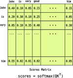
But here's the thing: we now have weightage scores corresponding to how well each token attends to every other token, but how do we actually use these scores? We need to propagate these scores forward in our architecture somehow. We can't only propagate these raw scores, as then we'll only have information about the attention, but not the actual tokens. What if we multiply this scores matrix with our existing token embedding matrix instead? There are some reasons this is not a good idea. First of all, it changes the information about our tokens' truth and second, it doesn't actually extract any new information from the embeddings. We currently only have the information about which token should "attend" to what, but no information about what inference to actually make out of that attention.
Let us think about what this means. Going back to our earlier example of "he" and "John", "he" now knows that "John" is what it should care about. But "he" doesn't know what information to care about regarding "John". For example, if the sentence was "John is an exceptional player as he won the tournament.", "he" doesn't know that "John" is the one who's exceptional and that he won the tournament. This context we want to add to the representation of "he". So, we want "John" to broadcast "thanks, 'he' for attending to me, let me tell you that I'm an exceptional player and I also won the tournament.". All of this extra context helps us build a richer representation of the token "he".
Now, notice how this is yet another "broadcasting" task like our queries and keys? We learn from what we did previously, and build this new matrix V, which stands for values. We call this matrix the value matrix because it actually provides the value of the context behind an attending token. We construct this matrix in a similar way we constructed our Q and K matrices. We multiply our token embeddings with a linear transformation Wv, which stands for "weights of the value matrix" to get the value matrix V.
So here are the ways each token uses each of our three Q, K and V matrices.
- Queries matrix: "What information am I looking for?"
- Keys matrix: "Here's the kind of information I can provide."
- Values matrix: "Here's the actual information about me."
Now we multiply this V matrix with our existing scores matrix. Doing so allows each token to gather more information from the tokens to which it attends strongly, and less information from the tokens to which it attends weakly. Hence, the amount of context gathered about other tokens depends on how well they attend to each other.
attention = softmax(QKT)V
We call this matrix our final measure of attention for the input token sequence. With that, we have successfully conquered the task of dependencies, while keeping it highly parallelizable, since we work with all tokens at once using matrices. Our architecture now looks like this:
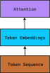
We call this attention block we augmented the Attention layer.
Oof! That must have been a massive read. I'd suggest you to get up and have some water, and I'll have some too!
So what we have done till now is that we have represented our vocabulary as IDs, represented the semantics of our vocabulary through embeddings, and established the dependencies between our tokens as the attention. We now have a crisp and rich representation of each of our tokens in the input sequence. The next thing we need to do is think about and analyze the rich representations our attention layer has given us and actually understand the language.
The thinking zone
Representing dependencies in text is not the same as understanding and reasoning about the text. To accomplish this task, we have to give our model a "thinking space". This space is nothing but a feed-forward neural network. Neural networks are excellent at recognizing and learning complex patterns in data, making them a natural choice for analyzing the rich representations from the attention block. The neural network will allow our architecture to analyze the piece of text and understand its meaning.
We process our output representations from the attention block through this neural network to get the "understood, sir" output representations.
So now, our architecture looks something like this:
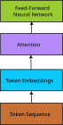
Great! We have now successfully covered the core concepts of language: vocabulary, semantics, dependencies, meaning, sequence.. wait, sequence? We haven't introduced anything in the architecture yet which accounts for the sequential nature of language! Of course "the man ate the apple" and "the apple ate the man" are two very different pieces of text, but if we feed both of them in our architecture right now, both will be processed exactly the same way, since all of our matrices and their calculations are token position-agnostic! It is necessary for us to introduce something to encode the information about the position of each token.
Encoding token positions
So we need to give our representations some sense of position of tokens. We can't input the tokens sequentially as that would just re-introduce the issues we had with RNNs. Since we can't input sequentially, and we have a working pipeline already, we need to "inject" the sense of positions in our pipeline somehow.
Let's gather what we need to do. We want to encode the sense of positions that we can "inject" into our representations. How do we prepare this sense of positions? We can always refer to what we did earlier! Remember how we encoded token IDs into vectors using token embeddings? Well, what we need to encode here are numbers too, like the token IDs. We need to encode the numbers 1, 2, 3.. and so on corresponding to the positions of tokens. So, we can encode these numbers as vectors, just like we encoded token IDs into vectors. As before, we collect all of these vectors of positions into a matrix, which we'll call the position embeddings. These positional embeddings are created the same way we created the token embeddings. We have a huge matrix Wp, which we perform our token position lookup on, to get embeddings corresponding to each position of token in our token sequence. This matrix, like our token embeddings matrix, is usually trained during the training process of our model.
Our token embedding matrix was of size |V| x ndim. Our positional embedding matrix would also be of a similar size. Our second dimension ndim, as before, would remain a choice, depending on what works best, but what about our first dimension? In the case of token embeddings, the answer was a straightforward length of our vocabulary of tokens, |V|, but we don't have a straightforward measure here. After all, token positions go to be arbitrarily large depending on the length of the input sequence! Since our position embedding matrix has to be finite (you're smart, sherlock), we'll cap the number of rows at a quantity nctx. This quantity decides the length of tokens our architecture can process at once. Here's when we realize that we cannot physically process an arbitrarily large amount of text at once. This nctx quantity is what we'll call the context window, since our architecture can only process this much context at once.
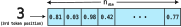
Now, let's think about how we can inject these positional embeddings into our pipeline. This act has to be done before the attention layer, because if we don't do so, the attention layer will treat "the man ate the apple" and "the apple ate the man" the same, and will not consider positions before establishing dependencies between our tokens. We have to inject these embeddings before the attention block.
Since we have both our representations, one for the tokens, and one for their positions, it'll be much more convenient that rather than propagating these two embeddings separately in the architecture, our token representations already contained both the pieces of information.
Notice how after fetching all the embeddings of our tokens and putting them in a matrix for further propagation, the resultant matrix's shape is at max nctx x ndim since our architecture can only process nctx tokens at once. So conveniently, our token embeddings output matrix and our positional embeddings matrix have the same shape. So, we can simply add the two matrices together, producing a representation that contains both semantic and positional information of the tokens, all before feeding into the attention layer.
So, our architecture looks like this:
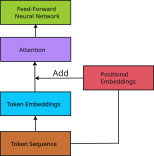
So, I think we have now truly covered all concepts of language, and the final output matrix obtained from our feed-forward neural network should contain all the information about our piece of text.
We have now theoretically truly covered all the concepts of language and represented them as numbers. That is precisely the task we had to accomplish. We should take a moment to pause and appreciate the architecture we have just built!
BUT! We should still be cautious before we finalize our architecture. What we have prepared till now is based on logical development. Any further improvements to be done in the architecture can now only be revealed by testing it against real-world tasks. Since this is an article, we can't perform all the real-world experiments and empirical trial and error here. So, from now on in the article, we'll assume that we have experimented with the architecture behind the scenes to get some insights, which we otherwise could not have possibly gotten from a theoretical point-of-view alone.
Some improvements
Meticulous experimentation later...Amount of compute
Our experiments found out that the output representations are very "weak" representations of our test text. What we mean by "weak" is that they represent the text very loosely. They may capture some adjacent words as dependencies, but not long-range ones (this may sound like the problem encountered with RNNs, but since we don't input the tokens sequentially, the problem here is actually different), and the logical understanding of the text is also inaccurate.
It seems like a singular attention layer and a singular neural network layer are unable to capture the complex patterns in language. Since our token sequence is constant, there should not be any problem with the token or the position embeddings. What would improve our output however, is the amount of compute, i.e., the number of attention and neural network layers. Currently, we have only one of each of the layers. Let's call a sequence of an attention layer and a neural network layer a block. We have to stack multiple of these blocks on top of each other to improve the compute, so our model produces more accurate representations of text. Doing so makes our architecture look like:
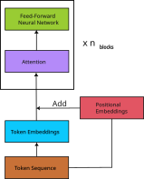
Here, nblocks is the number of blocks we stack on top of each other. An effective value for this quantity can be decided after more thorough experimentation.
The gradient problem
Great! We have introduced more blocks in our architecture, and we can see the model training.. until it, doesn't? After some time of training, the training process of the model is greatly slowed down, and the weights are hardly being optimized anymore, and it isn't the case that the model has been trained well yet either! When such a situation arises while training a deep learning model, we call it the vanishing gradient problem. This means that our gradients from backpropagation have been reduced to be negligible, and hence we can no longer update our parameters effectively.
But, this did not happen when we did not introduce multiple blocks in our architecture. The introduction of the extra blocks has somehow caused this problem to show up. Adding more blocks adds more layers of calculation for backpropagation. Maybe this is what is causing the gradients to diminish. Traveling all the way from the final to the first block makes the gradient negligible. We have to somehow provide an easy way for the gradient to reach from the final block to the first block, unhindered, almost like a "shortcut" of sorts.
Let's see, if we add a term of the unprocessed matrix (input to a layer) to the processed matrix (output of a layer) after getting an output of the layer, differentiating will make the "unprocessed matrix" term become +1. This +1 remains unhindered, no matter how small the other "processed term" becomes. (I expect some prerequisite knowledge of backpropagation for this part). This addition of the extra unprocessed term to the final output of a layer provides a "highway" for the gradients to travel back to the blocks undisturbed. We call this addition a residual connection. Adding these residual connections, our architecture looks like.
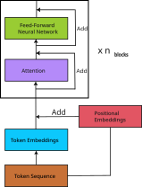
The unexpected crash
Now that we have added the residual connections, our gradients should no longer vanish and our model can keep training. We see it training, and training, and training but.. we encounter another problem! Our values inside of the scores matrix have become enormous! These values cause the softmax function to output an exact 1.00 value for some tokens, breaking the attention mechanism.
Now that the gradients do not vanish, these residual connections compound our values over and over so much that our values explode. We have to calm these values down so they don't explode. Hence, after the residual connection, we'll normalize the output matrix so its values have a mean of 0 and a standard deviation of 1. These values will be much more manageable for the computer and should not push the softmax outputs to 1.00. We call this additional normalization layer LayerNorm. Adding this layer, our architecture now looks like this:
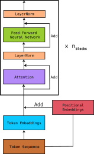
A final look
So now our crash is fixed and the values in the architecture are well under control. The model seems to train fine. This is what our final architecture looks like:
What our architecture can do now is represent all the aspects of a text in numbers (matrices). Once we have the final numerical representations, we can perform all sorts of tasks on these representations. We can feed these representations into a neural network classifier to analyze the sentiment of the text, recognize the named entities in the text etc.
Another exciting thing we can do is pass the output representations of our architecture through a linear transformation matrix of dimension ndim x |V|, which transforms each row of our raw output to a row of |V| elements each. We can train this linear transformation matrix along with our model so it accurately represents the probabilities of each of the |V| tokens in our vocabulary to be the next token for the input token sequence. This way, we build a next token predictor, and this is precisely the underlying principle of popular Large Language Models.
Our architecture works as expected, and it is time we give it the name "Transformer".
Comparisons
Here is an image of the Transformer we built, alongside the diagram from the original paper (Attention is All You Need).
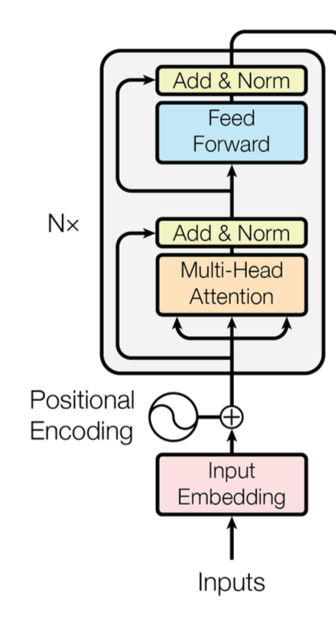
They look similar, right? We should be proud of that!
What we have just built is called an encoder-only transformer. The original paper's Transformer was an encoder-decoder transformer, and here is how it looks completely (earlier I cropped out the decoder part of the architecture):
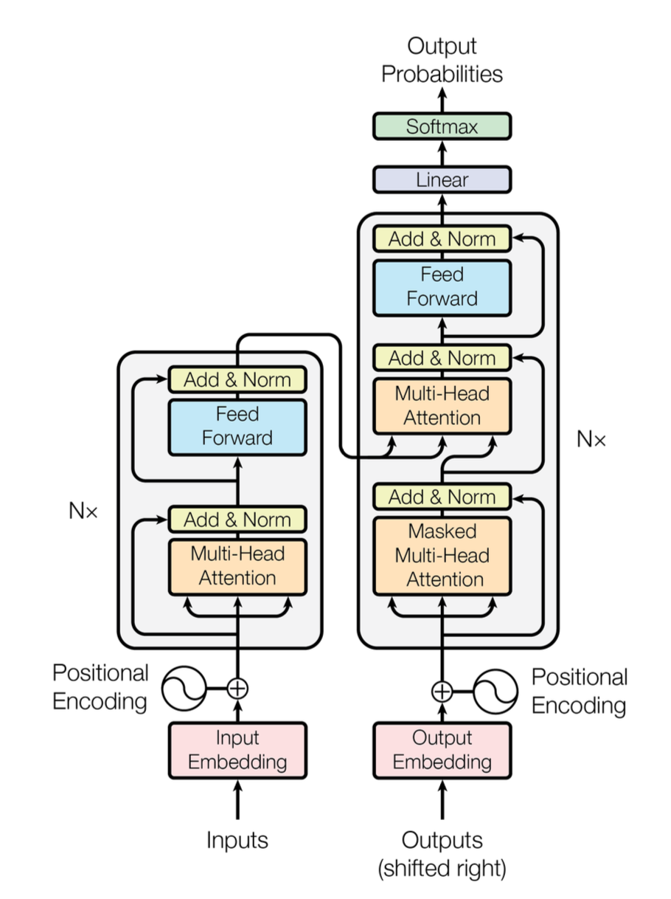
A decoder in a transformer is the same as the encoder we just built, but during the attention phase, it blocks each token from attending to tokens that come after it, so no token can 'peek' into the future while training. This "peek-blocking" is called Masking, and the attention layer which implements this is called Masked Attention. A decoder-only transformer is what is mainly used in modern day LLMs, and indeed, the next token prediction part I mentioned in the last section will need this.
While experimenting, the original authors implemented some more things in the original architecture:
- Instead of passing the complete token embeddings to a singular attention layer, the paper splits the input matrix into nheads matrices and feeds them into nheads different attention mechanisms simultaneously. Each of these "attention mechanisms" is called an attention head. The output of all these heads is then concatenated to a single bigger matrix to feed to the neural network layer. This implementation of the attention layer is called Multi-head Attention. This proves to be beneficial as the different attention heads learn to associate different aspects of tokens with other tokens. For example, one head may resolve dependencies related to adjectives, another for adverbs, etc. (What I described about division-of-labor between the attention heads is very surface-level. In reality, segregating the heads based on what feature they work on is not very straightforward).
- In the expression of attention in the original paper, the raw scores of the query and the key matrix before the softmax were divided by the square root of dk = ndim / nheads. This was to normalize the dot products, since their standard deviation grows proportionally to the square root of dk.
- The feed-forward network of the Transformer had two layers. The hidden layer had 4 x ndim neurons.
- The positional encodings used in the original paper were sinusoidal functions instead of the absolute embeddings we have used in this article.
- What we did with LayerNorm in this article is called Post-LN, i.e., applying the LayerNorm after the residual connections. This is how it was done in the original paper. However, it was found that this resulted in instability in values during training, and modern LLMs instead use Pre-LN, i.e., applying LayerNorm before the residual connections.
Conclusion
I know that we have not discussed training methods in this article, but that is to keep things in scope. The whole premise of this article was to get an intuition about the Transformer's architecture, and I hope that the next time you see two big boxes with smaller boxes inside of them, you'll not be overwhelmed.
Since you now hopefully have an intuition about the architecture of the Transformer, the next step I would recommend is to try to implement this yourself in code, and to watch this legendary video by Andrej Karpathy in which he builds a transformer from scratch in Python. I'd also recommend reading the original Transformer paper by Google here.
Farewell!